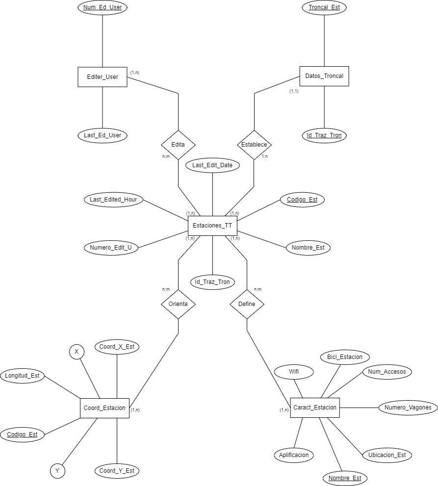

Analisis Estaciones Trasmilenio
Integrantes:
- Gabriela Aldana
- Camila Camacho
- Juan Diego Susunaga
- Juan Esteban Torres
Universidad Del Rosario
Facultad De Ingeniería, Ciencia Y Tecnología
Luz Stella Garcia Monsalve
(Escribir idea del proyecto)
Mer relacionado a la base de datos:
